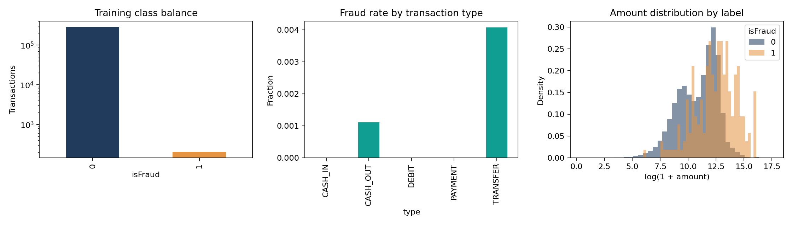
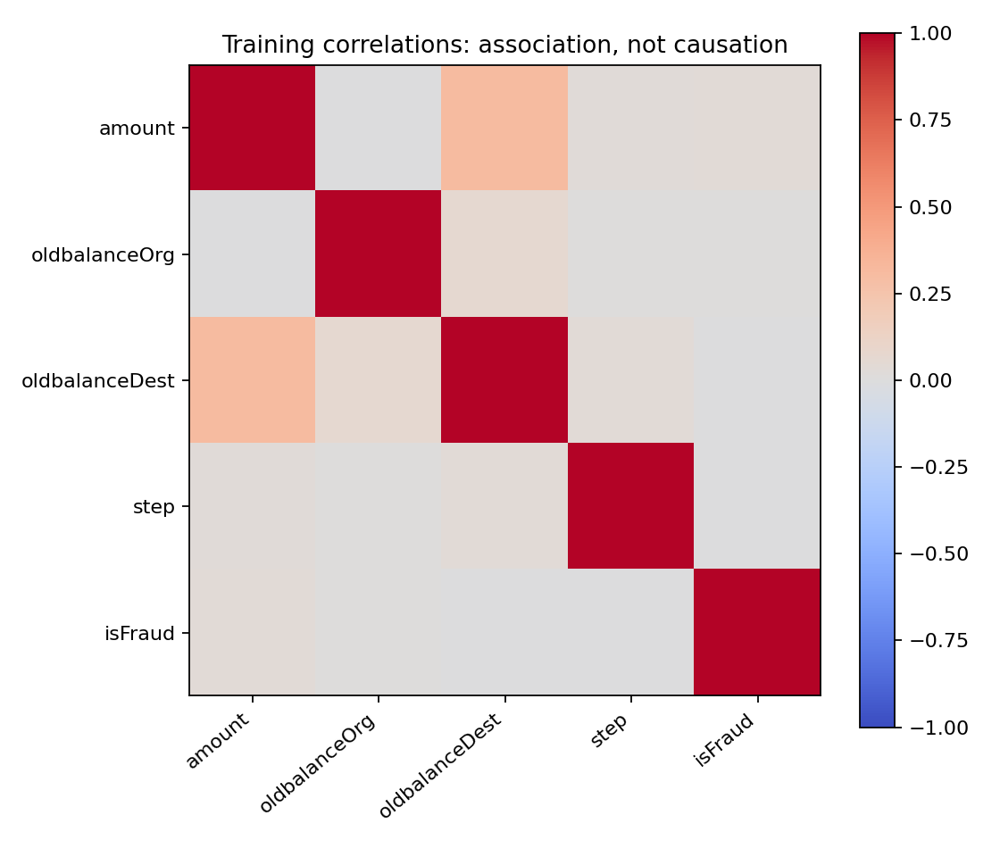
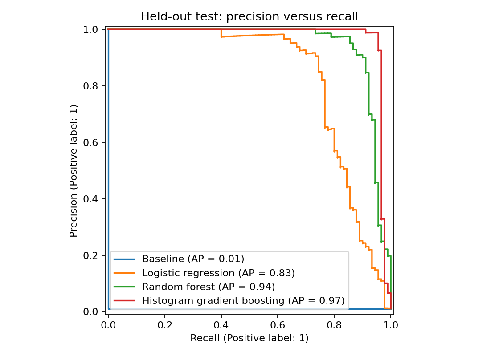
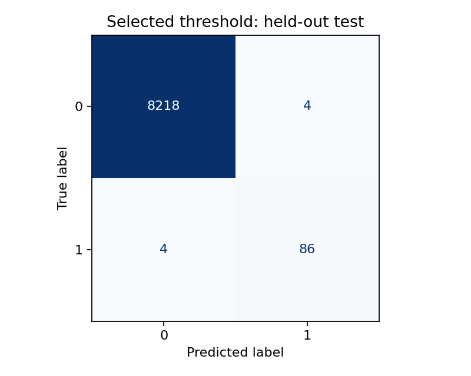

PaySim simulation. Test results describe this sample only.
| model | average_precision | roc_auc | precision | recall | f1 | tn | fp | fn | tp | threshold |
|---|---|---|---|---|---|---|---|---|---|---|
| Baseline | 0.0108 | 0.5000 | 0.0000 | 0.0000 | 0.0000 | 8222 | 0 | 90 | 0 | 0.5000 |
| Logistic regression | 0.8288 | 0.9723 | 0.1558 | 0.9333 | 0.2671 | 7767 | 455 | 6 | 84 | 0.5000 |
| Random forest | 0.9448 | 0.9981 | 0.9398 | 0.8667 | 0.9017 | 8217 | 5 | 12 | 78 | 0.5000 |
| Histogram gradient boosting | 0.9708 | 0.9970 | 0.9881 | 0.9222 | 0.9540 | 8221 | 1 | 7 | 83 | 0.5000 |
{'average_precision': 0.9708251436623248, 'roc_auc': 0.9969580258925916, 'precision': 0.9555555555555556, 'recall': 0.9555555555555556, 'f1': 0.9555555555555556, 'tn': 8218, 'fp': 4, 'fn': 4, 'tp': 86, 'threshold': 0.0037456342595840056, 'assumed_cost': 104.0}




Uncalibrated scores, simulated data, uniform-sample uncertainty and repeated-account dependence. No measured savings or production readiness claim.